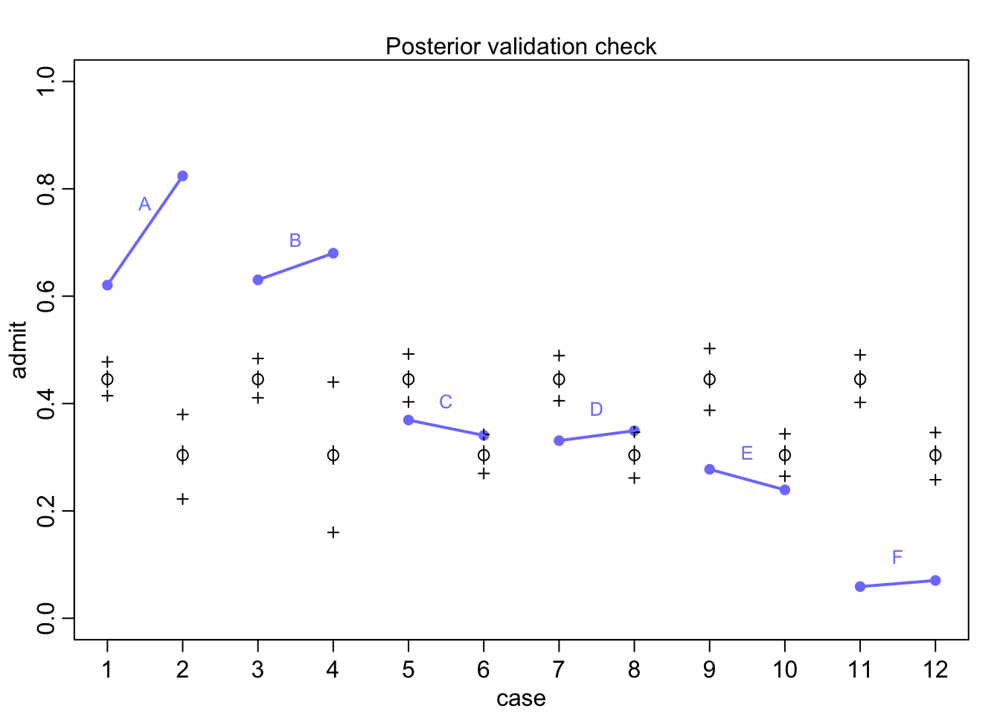
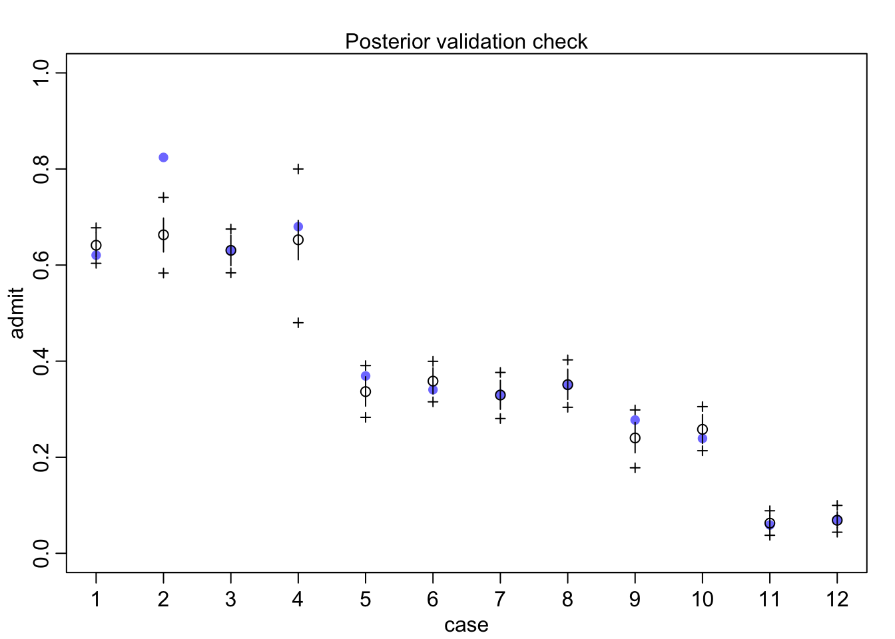

Chapter 11 God spiked the integers
GLMs are complex machines that are hard to interpret without understanding the whole and each of the parts within. To get started on trying to understand GLMs, we will look at count data (0, 1, 2, … etc).
Binomial regression will be when we have 2 defined outcomes that are both measured. (alive/dead, accept/reject)
Poisson regression is for counts that have no known maximum (number of animals in a country) or:
number of significance tests in an issue of Psychological Science. (p. 323)
11.1 Binomial regression
Going waaaay back to the globe tossing model
\[y \sim \text{Binomial}(n, p)\] here \(y\) is the count (0 or positive whole number), \(p\) is the probability any ‘trial’ is a success, and \(n\) is the number of trials. For the binomial to work we must have a constant expected value.
There are 2 common GLMs for Binomials
1. Logistic regression - independent outcomes are 0 or 1
2. Aggregated Binomial Regression - samilar covariate trials are grouped
Both of the above will make use of the Logit link function
11.1.2 Relative shark and absolute deer
What was described above was the absolute effect on the outcome. We can also calculate the relative effects or proportional odds. Here is the switch from treatment 2 \(\rightarrow\) 4 (adding a partner, left side food).
post <- extract.samples(m11.4)
mean(exp(post$b[,4]-post$b[,2])) ## [1] 0.9198223So we would multiply the odds of pulling the left lever by 0.92 which is a 8% reduction in pulling the left lever. This isn’t enough to make any big picture inferences though.
11.1.3 Aggregated binomial: Chimps condensed
Now we can analyze the data with the sets of variables aggregated or group in similar scenarios. Like how many left hand pulls across all trials
data(chimapnzees)## Warning in data(chimapnzees): data set 'chimapnzees' not foundd <- chimpanzees
d$treatment <- 1 + d$prosoc_left + 2*d$condition
d$side <- d$prosoc_left + 1 #right 1, left 2
d$cond <- d$condition + 1 # no partner 1, partner 2
d_aggregated <- aggregate(
d$pulled_left, list(
treatment = d$treatment, actor = d$actor, side = d$side, cond = d$cond
), sum
)
colnames(d_aggregated)[5] <- "left_pulls"Now we can use the aggregated data to get the same results
dat <- with(d_aggregated, list(
left_pulls = left_pulls,
treatment = treatment,
actor = actor,
cond = cond
))
m11.6 <- ulam(
alist(
left_pulls ~ dbinom(18, p),
logit(p) <- a[actor] + b[treatment],
a[actor] ~ dnorm(0, 1.5),
b[treatment] ~ dnorm(0, 0.5)
), data = dat, chains = 4, log_lik = TRUE
)## Warning in '/var/folders/mm/1f07t6b52_5cp3r1k03vcnvh0000gn/T/RtmpfntIhr/model-d7122627bf1.stan', line 2, column 4: Declaration
## of arrays by placing brackets after a variable name is deprecated and
## will be removed in Stan 2.32.0. Instead use the array keyword before the
## type. This can be changed automatically using the auto-format flag to
## stanc
## Warning in '/var/folders/mm/1f07t6b52_5cp3r1k03vcnvh0000gn/T/RtmpfntIhr/model-d7122627bf1.stan', line 3, column 4: Declaration
## of arrays by placing brackets after a variable name is deprecated and
## will be removed in Stan 2.32.0. Instead use the array keyword before the
## type. This can be changed automatically using the auto-format flag to
## stanc
## Warning in '/var/folders/mm/1f07t6b52_5cp3r1k03vcnvh0000gn/T/RtmpfntIhr/model-d7122627bf1.stan', line 4, column 4: Declaration
## of arrays by placing brackets after a variable name is deprecated and
## will be removed in Stan 2.32.0. Instead use the array keyword before the
## type. This can be changed automatically using the auto-format flag to
## stanc
## Warning in '/var/folders/mm/1f07t6b52_5cp3r1k03vcnvh0000gn/T/RtmpfntIhr/model-d7122627bf1.stan', line 5, column 4: Declaration
## of arrays by placing brackets after a variable name is deprecated and
## will be removed in Stan 2.32.0. Instead use the array keyword before the
## type. This can be changed automatically using the auto-format flag to
## stanc## Running MCMC with 4 sequential chains, with 1 thread(s) per chain...
##
## Chain 1 Iteration: 1 / 1000 [ 0%] (Warmup)
## Chain 1 Iteration: 100 / 1000 [ 10%] (Warmup)
## Chain 1 Iteration: 200 / 1000 [ 20%] (Warmup)
## Chain 1 Iteration: 300 / 1000 [ 30%] (Warmup)
## Chain 1 Iteration: 400 / 1000 [ 40%] (Warmup)
## Chain 1 Iteration: 500 / 1000 [ 50%] (Warmup)
## Chain 1 Iteration: 501 / 1000 [ 50%] (Sampling)
## Chain 1 Iteration: 600 / 1000 [ 60%] (Sampling)
## Chain 1 Iteration: 700 / 1000 [ 70%] (Sampling)
## Chain 1 Iteration: 800 / 1000 [ 80%] (Sampling)
## Chain 1 Iteration: 900 / 1000 [ 90%] (Sampling)
## Chain 1 Iteration: 1000 / 1000 [100%] (Sampling)
## Chain 1 finished in 0.1 seconds.
## Chain 2 Iteration: 1 / 1000 [ 0%] (Warmup)
## Chain 2 Iteration: 100 / 1000 [ 10%] (Warmup)
## Chain 2 Iteration: 200 / 1000 [ 20%] (Warmup)
## Chain 2 Iteration: 300 / 1000 [ 30%] (Warmup)
## Chain 2 Iteration: 400 / 1000 [ 40%] (Warmup)
## Chain 2 Iteration: 500 / 1000 [ 50%] (Warmup)
## Chain 2 Iteration: 501 / 1000 [ 50%] (Sampling)
## Chain 2 Iteration: 600 / 1000 [ 60%] (Sampling)
## Chain 2 Iteration: 700 / 1000 [ 70%] (Sampling)
## Chain 2 Iteration: 800 / 1000 [ 80%] (Sampling)
## Chain 2 Iteration: 900 / 1000 [ 90%] (Sampling)
## Chain 2 Iteration: 1000 / 1000 [100%] (Sampling)
## Chain 2 finished in 0.1 seconds.
## Chain 3 Iteration: 1 / 1000 [ 0%] (Warmup)
## Chain 3 Iteration: 100 / 1000 [ 10%] (Warmup)
## Chain 3 Iteration: 200 / 1000 [ 20%] (Warmup)
## Chain 3 Iteration: 300 / 1000 [ 30%] (Warmup)
## Chain 3 Iteration: 400 / 1000 [ 40%] (Warmup)
## Chain 3 Iteration: 500 / 1000 [ 50%] (Warmup)
## Chain 3 Iteration: 501 / 1000 [ 50%] (Sampling)
## Chain 3 Iteration: 600 / 1000 [ 60%] (Sampling)
## Chain 3 Iteration: 700 / 1000 [ 70%] (Sampling)
## Chain 3 Iteration: 800 / 1000 [ 80%] (Sampling)
## Chain 3 Iteration: 900 / 1000 [ 90%] (Sampling)
## Chain 3 Iteration: 1000 / 1000 [100%] (Sampling)
## Chain 3 finished in 0.1 seconds.
## Chain 4 Iteration: 1 / 1000 [ 0%] (Warmup)
## Chain 4 Iteration: 100 / 1000 [ 10%] (Warmup)
## Chain 4 Iteration: 200 / 1000 [ 20%] (Warmup)
## Chain 4 Iteration: 300 / 1000 [ 30%] (Warmup)
## Chain 4 Iteration: 400 / 1000 [ 40%] (Warmup)
## Chain 4 Iteration: 500 / 1000 [ 50%] (Warmup)
## Chain 4 Iteration: 501 / 1000 [ 50%] (Sampling)
## Chain 4 Iteration: 600 / 1000 [ 60%] (Sampling)
## Chain 4 Iteration: 700 / 1000 [ 70%] (Sampling)
## Chain 4 Iteration: 800 / 1000 [ 80%] (Sampling)
## Chain 4 Iteration: 900 / 1000 [ 90%] (Sampling)
## Chain 4 Iteration: 1000 / 1000 [100%] (Sampling)
## Chain 4 finished in 0.1 seconds.
##
## All 4 chains finished successfully.
## Mean chain execution time: 0.1 seconds.
## Total execution time: 0.6 seconds.compare(m11.6, m11.4, func=PSIS)## Warning in compare(m11.6, m11.4, func = PSIS): Different numbers of observations found for at least two models.
## Model comparison is valid only for models fit to exactly the same observations.
## Number of observations for each model:
## m11.6 28
## m11.4 504## Some Pareto k values are high (>0.5). Set pointwise=TRUE to inspect individual points.## PSIS SE dPSIS dSE pPSIS weight
## m11.6 115.4243 8.689378 0.0000 NA 9.029483 1.000000e+00
## m11.4 532.0721 18.897046 416.6478 9.686421 8.383866 3.358034e-91The distribution of the aggregated data is larger because the model knows the total number of trials and the number of successes. Here is a comparison of 6 successes in 9 trials aggregated vs unaggregated
#deviance of aggregate
-2*dbinom(6, 9, 0.2, log = TRUE)## [1] 11.79048#deviance of unaggregated
-2*sum(dbern(c(1,1,1,1,1,1,0,0,0), 0.2, log = TRUE))## [1] 20.65212This doesn’t mean anything for the posterior though. It will be the same across the two methods. If you are interested in the output of WAIC of PSIS, you should use the unaggregated model.
11.1.4 Aggregated admissions
data(UCBadmit)
d <- UCBadmit
d## dept applicant.gender admit reject applications
## 1 A male 512 313 825
## 2 A female 89 19 108
## 3 B male 353 207 560
## 4 B female 17 8 25
## 5 C male 120 205 325
## 6 C female 202 391 593
## 7 D male 138 279 417
## 8 D female 131 244 375
## 9 E male 53 138 191
## 10 E female 94 299 393
## 11 F male 22 351 373
## 12 F female 24 317 341Is there gender bias? \[A_{i} \sim \text{Binomial}(N_{i}, p_{i})\\ \text{logit}(p_{i}) = \alpha_{GID[i]}\\ \alpha_{j} \sim \text{Normal}(0, 1.5)\]
dat_list <- list(
admit = d$admit,
applications = d$applications,
gid = ifelse(d$applicant.gender == "male", 1, 2)
)
m11.7 <- ulam(
alist(
admit ~ dbinom(applications, p),
logit(p) <- a[gid],
a[gid] ~ dnorm(0, 1.5)
), data = dat_list, chains = 4
)## Warning in '/var/folders/mm/1f07t6b52_5cp3r1k03vcnvh0000gn/T/RtmpfntIhr/model-d713e3cc3b8.stan', line 2, column 4: Declaration
## of arrays by placing brackets after a variable name is deprecated and
## will be removed in Stan 2.32.0. Instead use the array keyword before the
## type. This can be changed automatically using the auto-format flag to
## stanc
## Warning in '/var/folders/mm/1f07t6b52_5cp3r1k03vcnvh0000gn/T/RtmpfntIhr/model-d713e3cc3b8.stan', line 3, column 4: Declaration
## of arrays by placing brackets after a variable name is deprecated and
## will be removed in Stan 2.32.0. Instead use the array keyword before the
## type. This can be changed automatically using the auto-format flag to
## stanc
## Warning in '/var/folders/mm/1f07t6b52_5cp3r1k03vcnvh0000gn/T/RtmpfntIhr/model-d713e3cc3b8.stan', line 4, column 4: Declaration
## of arrays by placing brackets after a variable name is deprecated and
## will be removed in Stan 2.32.0. Instead use the array keyword before the
## type. This can be changed automatically using the auto-format flag to
## stanc## Running MCMC with 4 sequential chains, with 1 thread(s) per chain...
##
## Chain 1 Iteration: 1 / 1000 [ 0%] (Warmup)
## Chain 1 Iteration: 100 / 1000 [ 10%] (Warmup)
## Chain 1 Iteration: 200 / 1000 [ 20%] (Warmup)
## Chain 1 Iteration: 300 / 1000 [ 30%] (Warmup)
## Chain 1 Iteration: 400 / 1000 [ 40%] (Warmup)
## Chain 1 Iteration: 500 / 1000 [ 50%] (Warmup)
## Chain 1 Iteration: 501 / 1000 [ 50%] (Sampling)
## Chain 1 Iteration: 600 / 1000 [ 60%] (Sampling)
## Chain 1 Iteration: 700 / 1000 [ 70%] (Sampling)
## Chain 1 Iteration: 800 / 1000 [ 80%] (Sampling)
## Chain 1 Iteration: 900 / 1000 [ 90%] (Sampling)
## Chain 1 Iteration: 1000 / 1000 [100%] (Sampling)
## Chain 1 finished in 0.0 seconds.
## Chain 2 Iteration: 1 / 1000 [ 0%] (Warmup)
## Chain 2 Iteration: 100 / 1000 [ 10%] (Warmup)
## Chain 2 Iteration: 200 / 1000 [ 20%] (Warmup)
## Chain 2 Iteration: 300 / 1000 [ 30%] (Warmup)
## Chain 2 Iteration: 400 / 1000 [ 40%] (Warmup)
## Chain 2 Iteration: 500 / 1000 [ 50%] (Warmup)
## Chain 2 Iteration: 501 / 1000 [ 50%] (Sampling)
## Chain 2 Iteration: 600 / 1000 [ 60%] (Sampling)
## Chain 2 Iteration: 700 / 1000 [ 70%] (Sampling)
## Chain 2 Iteration: 800 / 1000 [ 80%] (Sampling)
## Chain 2 Iteration: 900 / 1000 [ 90%] (Sampling)
## Chain 2 Iteration: 1000 / 1000 [100%] (Sampling)
## Chain 2 finished in 0.0 seconds.
## Chain 3 Iteration: 1 / 1000 [ 0%] (Warmup)
## Chain 3 Iteration: 100 / 1000 [ 10%] (Warmup)
## Chain 3 Iteration: 200 / 1000 [ 20%] (Warmup)
## Chain 3 Iteration: 300 / 1000 [ 30%] (Warmup)
## Chain 3 Iteration: 400 / 1000 [ 40%] (Warmup)
## Chain 3 Iteration: 500 / 1000 [ 50%] (Warmup)
## Chain 3 Iteration: 501 / 1000 [ 50%] (Sampling)
## Chain 3 Iteration: 600 / 1000 [ 60%] (Sampling)
## Chain 3 Iteration: 700 / 1000 [ 70%] (Sampling)
## Chain 3 Iteration: 800 / 1000 [ 80%] (Sampling)
## Chain 3 Iteration: 900 / 1000 [ 90%] (Sampling)
## Chain 3 Iteration: 1000 / 1000 [100%] (Sampling)
## Chain 3 finished in 0.0 seconds.
## Chain 4 Iteration: 1 / 1000 [ 0%] (Warmup)
## Chain 4 Iteration: 100 / 1000 [ 10%] (Warmup)
## Chain 4 Iteration: 200 / 1000 [ 20%] (Warmup)
## Chain 4 Iteration: 300 / 1000 [ 30%] (Warmup)
## Chain 4 Iteration: 400 / 1000 [ 40%] (Warmup)
## Chain 4 Iteration: 500 / 1000 [ 50%] (Warmup)
## Chain 4 Iteration: 501 / 1000 [ 50%] (Sampling)
## Chain 4 Iteration: 600 / 1000 [ 60%] (Sampling)
## Chain 4 Iteration: 700 / 1000 [ 70%] (Sampling)
## Chain 4 Iteration: 800 / 1000 [ 80%] (Sampling)
## Chain 4 Iteration: 900 / 1000 [ 90%] (Sampling)
## Chain 4 Iteration: 1000 / 1000 [100%] (Sampling)
## Chain 4 finished in 0.0 seconds.
##
## All 4 chains finished successfully.
## Mean chain execution time: 0.0 seconds.
## Total execution time: 0.7 seconds.precis(m11.7, depth = 2)## mean sd 5.5% 94.5% n_eff Rhat4
## a[1] -0.2203097 0.03885931 -0.2827576 -0.1573031 1344.449 0.9999338
## a[2] -0.8297067 0.05104611 -0.9098031 -0.7481747 1371.791 1.0022231post <- extract.samples(m11.7)
diff_a <- post$a[,1] - post$a[,2]
diff_p <- inv_logit(post$a[,1]) - inv_logit(post$a[,2])
precis(list(diff_a=diff_a, diff_p=diff_p))## mean sd 5.5% 94.5% histogram
## diff_a 0.6093971 0.06372659 0.5022138 0.7068903 ▁▁▃▇▇▅▂▁▁
## diff_p 0.1413496 0.01434578 0.1173636 0.1631168 ▁▁▂▃▇▇▅▂▁▁The log-odds difference (diff_a) is positive which indicates a higher admit prob for males. the outcome probability is 12-16% higher for males.
Visualize the posterior
postcheck(m11.7)
for(i in 1:6){
x <- 1 + 2*(i-1)
y1 <- d$admit[x]/d$applications[x]
y2 <- d$admit[x+1]/d$applications[x+1]
lines(c(x, x+1), c(y1, y2), col=rangi2, lwd=2)
text(x+0.5, (y1+y2)/2 + 0.05, d$dept[x], cex = 0.8, col=rangi2)
}
Women overall have less probability of getting admitted, but there is within deparrtment variation. Let’s account for this
\[A_{i} \sim \text{Binomial}(N_{i}, p_{i})\\ \text{logit}(p_{i}) = \alpha_{GID[i]} + \delta_{DEPT[i]}\\ \alpha_{j} \sim \text{Normal}(0, 1.5)\\ \delta_{k} \sim \text{Normal}(0, 1.5)\]
dat_list$dept_id <- rep(1:6, each = 2)
m11.8 <- ulam(
alist(
admit ~ dbinom(applications, p),
logit(p) <- a[gid] + delta[dept_id],
a[gid] ~ dnorm(0, 1.5),
delta[dept_id] ~ dnorm(0, 1.5)
), data = dat_list, chains = 4, iter = 4000
)## Warning in '/var/folders/mm/1f07t6b52_5cp3r1k03vcnvh0000gn/T/RtmpfntIhr/model-d712c56c72c.stan', line 2, column 4: Declaration
## of arrays by placing brackets after a variable name is deprecated and
## will be removed in Stan 2.32.0. Instead use the array keyword before the
## type. This can be changed automatically using the auto-format flag to
## stanc
## Warning in '/var/folders/mm/1f07t6b52_5cp3r1k03vcnvh0000gn/T/RtmpfntIhr/model-d712c56c72c.stan', line 3, column 4: Declaration
## of arrays by placing brackets after a variable name is deprecated and
## will be removed in Stan 2.32.0. Instead use the array keyword before the
## type. This can be changed automatically using the auto-format flag to
## stanc
## Warning in '/var/folders/mm/1f07t6b52_5cp3r1k03vcnvh0000gn/T/RtmpfntIhr/model-d712c56c72c.stan', line 4, column 4: Declaration
## of arrays by placing brackets after a variable name is deprecated and
## will be removed in Stan 2.32.0. Instead use the array keyword before the
## type. This can be changed automatically using the auto-format flag to
## stanc
## Warning in '/var/folders/mm/1f07t6b52_5cp3r1k03vcnvh0000gn/T/RtmpfntIhr/model-d712c56c72c.stan', line 5, column 4: Declaration
## of arrays by placing brackets after a variable name is deprecated and
## will be removed in Stan 2.32.0. Instead use the array keyword before the
## type. This can be changed automatically using the auto-format flag to
## stanc## Running MCMC with 4 sequential chains, with 1 thread(s) per chain...
##
## Chain 1 Iteration: 1 / 4000 [ 0%] (Warmup)
## Chain 1 Iteration: 100 / 4000 [ 2%] (Warmup)
## Chain 1 Iteration: 200 / 4000 [ 5%] (Warmup)
## Chain 1 Iteration: 300 / 4000 [ 7%] (Warmup)
## Chain 1 Iteration: 400 / 4000 [ 10%] (Warmup)
## Chain 1 Iteration: 500 / 4000 [ 12%] (Warmup)
## Chain 1 Iteration: 600 / 4000 [ 15%] (Warmup)
## Chain 1 Iteration: 700 / 4000 [ 17%] (Warmup)
## Chain 1 Iteration: 800 / 4000 [ 20%] (Warmup)
## Chain 1 Iteration: 900 / 4000 [ 22%] (Warmup)
## Chain 1 Iteration: 1000 / 4000 [ 25%] (Warmup)
## Chain 1 Iteration: 1100 / 4000 [ 27%] (Warmup)
## Chain 1 Iteration: 1200 / 4000 [ 30%] (Warmup)
## Chain 1 Iteration: 1300 / 4000 [ 32%] (Warmup)
## Chain 1 Iteration: 1400 / 4000 [ 35%] (Warmup)
## Chain 1 Iteration: 1500 / 4000 [ 37%] (Warmup)
## Chain 1 Iteration: 1600 / 4000 [ 40%] (Warmup)
## Chain 1 Iteration: 1700 / 4000 [ 42%] (Warmup)
## Chain 1 Iteration: 1800 / 4000 [ 45%] (Warmup)
## Chain 1 Iteration: 1900 / 4000 [ 47%] (Warmup)
## Chain 1 Iteration: 2000 / 4000 [ 50%] (Warmup)
## Chain 1 Iteration: 2001 / 4000 [ 50%] (Sampling)
## Chain 1 Iteration: 2100 / 4000 [ 52%] (Sampling)
## Chain 1 Iteration: 2200 / 4000 [ 55%] (Sampling)
## Chain 1 Iteration: 2300 / 4000 [ 57%] (Sampling)
## Chain 1 Iteration: 2400 / 4000 [ 60%] (Sampling)
## Chain 1 Iteration: 2500 / 4000 [ 62%] (Sampling)
## Chain 1 Iteration: 2600 / 4000 [ 65%] (Sampling)
## Chain 1 Iteration: 2700 / 4000 [ 67%] (Sampling)
## Chain 1 Iteration: 2800 / 4000 [ 70%] (Sampling)
## Chain 1 Iteration: 2900 / 4000 [ 72%] (Sampling)
## Chain 1 Iteration: 3000 / 4000 [ 75%] (Sampling)
## Chain 1 Iteration: 3100 / 4000 [ 77%] (Sampling)
## Chain 1 Iteration: 3200 / 4000 [ 80%] (Sampling)
## Chain 1 Iteration: 3300 / 4000 [ 82%] (Sampling)
## Chain 1 Iteration: 3400 / 4000 [ 85%] (Sampling)
## Chain 1 Iteration: 3500 / 4000 [ 87%] (Sampling)
## Chain 1 Iteration: 3600 / 4000 [ 90%] (Sampling)
## Chain 1 Iteration: 3700 / 4000 [ 92%] (Sampling)
## Chain 1 Iteration: 3800 / 4000 [ 95%] (Sampling)
## Chain 1 Iteration: 3900 / 4000 [ 97%] (Sampling)
## Chain 1 Iteration: 4000 / 4000 [100%] (Sampling)
## Chain 1 finished in 0.5 seconds.
## Chain 2 Iteration: 1 / 4000 [ 0%] (Warmup)
## Chain 2 Iteration: 100 / 4000 [ 2%] (Warmup)
## Chain 2 Iteration: 200 / 4000 [ 5%] (Warmup)
## Chain 2 Iteration: 300 / 4000 [ 7%] (Warmup)
## Chain 2 Iteration: 400 / 4000 [ 10%] (Warmup)
## Chain 2 Iteration: 500 / 4000 [ 12%] (Warmup)
## Chain 2 Iteration: 600 / 4000 [ 15%] (Warmup)
## Chain 2 Iteration: 700 / 4000 [ 17%] (Warmup)
## Chain 2 Iteration: 800 / 4000 [ 20%] (Warmup)
## Chain 2 Iteration: 900 / 4000 [ 22%] (Warmup)
## Chain 2 Iteration: 1000 / 4000 [ 25%] (Warmup)
## Chain 2 Iteration: 1100 / 4000 [ 27%] (Warmup)
## Chain 2 Iteration: 1200 / 4000 [ 30%] (Warmup)
## Chain 2 Iteration: 1300 / 4000 [ 32%] (Warmup)
## Chain 2 Iteration: 1400 / 4000 [ 35%] (Warmup)
## Chain 2 Iteration: 1500 / 4000 [ 37%] (Warmup)
## Chain 2 Iteration: 1600 / 4000 [ 40%] (Warmup)
## Chain 2 Iteration: 1700 / 4000 [ 42%] (Warmup)
## Chain 2 Iteration: 1800 / 4000 [ 45%] (Warmup)
## Chain 2 Iteration: 1900 / 4000 [ 47%] (Warmup)
## Chain 2 Iteration: 2000 / 4000 [ 50%] (Warmup)
## Chain 2 Iteration: 2001 / 4000 [ 50%] (Sampling)
## Chain 2 Iteration: 2100 / 4000 [ 52%] (Sampling)
## Chain 2 Iteration: 2200 / 4000 [ 55%] (Sampling)
## Chain 2 Iteration: 2300 / 4000 [ 57%] (Sampling)
## Chain 2 Iteration: 2400 / 4000 [ 60%] (Sampling)
## Chain 2 Iteration: 2500 / 4000 [ 62%] (Sampling)
## Chain 2 Iteration: 2600 / 4000 [ 65%] (Sampling)
## Chain 2 Iteration: 2700 / 4000 [ 67%] (Sampling)
## Chain 2 Iteration: 2800 / 4000 [ 70%] (Sampling)
## Chain 2 Iteration: 2900 / 4000 [ 72%] (Sampling)
## Chain 2 Iteration: 3000 / 4000 [ 75%] (Sampling)
## Chain 2 Iteration: 3100 / 4000 [ 77%] (Sampling)
## Chain 2 Iteration: 3200 / 4000 [ 80%] (Sampling)
## Chain 2 Iteration: 3300 / 4000 [ 82%] (Sampling)
## Chain 2 Iteration: 3400 / 4000 [ 85%] (Sampling)
## Chain 2 Iteration: 3500 / 4000 [ 87%] (Sampling)
## Chain 2 Iteration: 3600 / 4000 [ 90%] (Sampling)
## Chain 2 Iteration: 3700 / 4000 [ 92%] (Sampling)
## Chain 2 Iteration: 3800 / 4000 [ 95%] (Sampling)
## Chain 2 Iteration: 3900 / 4000 [ 97%] (Sampling)
## Chain 2 Iteration: 4000 / 4000 [100%] (Sampling)
## Chain 2 finished in 0.6 seconds.
## Chain 3 Iteration: 1 / 4000 [ 0%] (Warmup)
## Chain 3 Iteration: 100 / 4000 [ 2%] (Warmup)
## Chain 3 Iteration: 200 / 4000 [ 5%] (Warmup)
## Chain 3 Iteration: 300 / 4000 [ 7%] (Warmup)
## Chain 3 Iteration: 400 / 4000 [ 10%] (Warmup)
## Chain 3 Iteration: 500 / 4000 [ 12%] (Warmup)
## Chain 3 Iteration: 600 / 4000 [ 15%] (Warmup)
## Chain 3 Iteration: 700 / 4000 [ 17%] (Warmup)
## Chain 3 Iteration: 800 / 4000 [ 20%] (Warmup)
## Chain 3 Iteration: 900 / 4000 [ 22%] (Warmup)
## Chain 3 Iteration: 1000 / 4000 [ 25%] (Warmup)
## Chain 3 Iteration: 1100 / 4000 [ 27%] (Warmup)
## Chain 3 Iteration: 1200 / 4000 [ 30%] (Warmup)
## Chain 3 Iteration: 1300 / 4000 [ 32%] (Warmup)
## Chain 3 Iteration: 1400 / 4000 [ 35%] (Warmup)
## Chain 3 Iteration: 1500 / 4000 [ 37%] (Warmup)
## Chain 3 Iteration: 1600 / 4000 [ 40%] (Warmup)
## Chain 3 Iteration: 1700 / 4000 [ 42%] (Warmup)
## Chain 3 Iteration: 1800 / 4000 [ 45%] (Warmup)
## Chain 3 Iteration: 1900 / 4000 [ 47%] (Warmup)
## Chain 3 Iteration: 2000 / 4000 [ 50%] (Warmup)
## Chain 3 Iteration: 2001 / 4000 [ 50%] (Sampling)
## Chain 3 Iteration: 2100 / 4000 [ 52%] (Sampling)
## Chain 3 Iteration: 2200 / 4000 [ 55%] (Sampling)
## Chain 3 Iteration: 2300 / 4000 [ 57%] (Sampling)
## Chain 3 Iteration: 2400 / 4000 [ 60%] (Sampling)
## Chain 3 Iteration: 2500 / 4000 [ 62%] (Sampling)
## Chain 3 Iteration: 2600 / 4000 [ 65%] (Sampling)
## Chain 3 Iteration: 2700 / 4000 [ 67%] (Sampling)
## Chain 3 Iteration: 2800 / 4000 [ 70%] (Sampling)
## Chain 3 Iteration: 2900 / 4000 [ 72%] (Sampling)
## Chain 3 Iteration: 3000 / 4000 [ 75%] (Sampling)
## Chain 3 Iteration: 3100 / 4000 [ 77%] (Sampling)
## Chain 3 Iteration: 3200 / 4000 [ 80%] (Sampling)
## Chain 3 Iteration: 3300 / 4000 [ 82%] (Sampling)
## Chain 3 Iteration: 3400 / 4000 [ 85%] (Sampling)
## Chain 3 Iteration: 3500 / 4000 [ 87%] (Sampling)
## Chain 3 Iteration: 3600 / 4000 [ 90%] (Sampling)
## Chain 3 Iteration: 3700 / 4000 [ 92%] (Sampling)
## Chain 3 Iteration: 3800 / 4000 [ 95%] (Sampling)
## Chain 3 Iteration: 3900 / 4000 [ 97%] (Sampling)
## Chain 3 Iteration: 4000 / 4000 [100%] (Sampling)
## Chain 3 finished in 0.5 seconds.
## Chain 4 Iteration: 1 / 4000 [ 0%] (Warmup)
## Chain 4 Iteration: 100 / 4000 [ 2%] (Warmup)
## Chain 4 Iteration: 200 / 4000 [ 5%] (Warmup)
## Chain 4 Iteration: 300 / 4000 [ 7%] (Warmup)
## Chain 4 Iteration: 400 / 4000 [ 10%] (Warmup)
## Chain 4 Iteration: 500 / 4000 [ 12%] (Warmup)
## Chain 4 Iteration: 600 / 4000 [ 15%] (Warmup)
## Chain 4 Iteration: 700 / 4000 [ 17%] (Warmup)
## Chain 4 Iteration: 800 / 4000 [ 20%] (Warmup)
## Chain 4 Iteration: 900 / 4000 [ 22%] (Warmup)
## Chain 4 Iteration: 1000 / 4000 [ 25%] (Warmup)
## Chain 4 Iteration: 1100 / 4000 [ 27%] (Warmup)
## Chain 4 Iteration: 1200 / 4000 [ 30%] (Warmup)
## Chain 4 Iteration: 1300 / 4000 [ 32%] (Warmup)
## Chain 4 Iteration: 1400 / 4000 [ 35%] (Warmup)
## Chain 4 Iteration: 1500 / 4000 [ 37%] (Warmup)
## Chain 4 Iteration: 1600 / 4000 [ 40%] (Warmup)
## Chain 4 Iteration: 1700 / 4000 [ 42%] (Warmup)
## Chain 4 Iteration: 1800 / 4000 [ 45%] (Warmup)
## Chain 4 Iteration: 1900 / 4000 [ 47%] (Warmup)
## Chain 4 Iteration: 2000 / 4000 [ 50%] (Warmup)
## Chain 4 Iteration: 2001 / 4000 [ 50%] (Sampling)
## Chain 4 Iteration: 2100 / 4000 [ 52%] (Sampling)
## Chain 4 Iteration: 2200 / 4000 [ 55%] (Sampling)
## Chain 4 Iteration: 2300 / 4000 [ 57%] (Sampling)
## Chain 4 Iteration: 2400 / 4000 [ 60%] (Sampling)
## Chain 4 Iteration: 2500 / 4000 [ 62%] (Sampling)
## Chain 4 Iteration: 2600 / 4000 [ 65%] (Sampling)
## Chain 4 Iteration: 2700 / 4000 [ 67%] (Sampling)
## Chain 4 Iteration: 2800 / 4000 [ 70%] (Sampling)
## Chain 4 Iteration: 2900 / 4000 [ 72%] (Sampling)
## Chain 4 Iteration: 3000 / 4000 [ 75%] (Sampling)
## Chain 4 Iteration: 3100 / 4000 [ 77%] (Sampling)
## Chain 4 Iteration: 3200 / 4000 [ 80%] (Sampling)
## Chain 4 Iteration: 3300 / 4000 [ 82%] (Sampling)
## Chain 4 Iteration: 3400 / 4000 [ 85%] (Sampling)
## Chain 4 Iteration: 3500 / 4000 [ 87%] (Sampling)
## Chain 4 Iteration: 3600 / 4000 [ 90%] (Sampling)
## Chain 4 Iteration: 3700 / 4000 [ 92%] (Sampling)
## Chain 4 Iteration: 3800 / 4000 [ 95%] (Sampling)
## Chain 4 Iteration: 3900 / 4000 [ 97%] (Sampling)
## Chain 4 Iteration: 4000 / 4000 [100%] (Sampling)
## Chain 4 finished in 0.5 seconds.
##
## All 4 chains finished successfully.
## Mean chain execution time: 0.5 seconds.
## Total execution time: 2.4 seconds.precis(m11.8, depth = 2)## mean sd 5.5% 94.5% n_eff Rhat4
## a[1] -0.4797363 0.5285767 -1.3203164 0.3408876 729.1377 1.006207
## a[2] -0.3830486 0.5296107 -1.2254720 0.4399153 733.4548 1.006083
## delta[1] 1.0610778 0.5311250 0.2296213 1.9013047 735.5432 1.006321
## delta[2] 1.0155339 0.5333167 0.1859177 1.8641042 734.7407 1.006233
## delta[3] -0.1999438 0.5302260 -1.0196797 0.6545453 741.6319 1.005926
## delta[4] -0.2320340 0.5309040 -1.0641837 0.6129361 736.8921 1.006138
## delta[5] -0.6753254 0.5346639 -1.5106367 0.1861121 741.3245 1.006251
## delta[6] -2.2335957 0.5444183 -3.1001722 -1.3744923 781.8925 1.005968post <- extract.samples(m11.8)
diff_a <- post$a[,1] - post$a[,2]
diff_p <- inv_logit(post$a[,1]) - inv_logit(post$a[,2])
precis(list(diff_a=diff_a, diff_p=diff_p))## mean sd 5.5% 94.5% histogram
## diff_a -0.09668761 0.07982130 -0.22331892 0.033050385 ▁▁▁▁▂▅▇▇▅▂▁▁▁
## diff_p -0.02184294 0.01833935 -0.05147136 0.007452741 ▁▁▁▁▁▃▅▇▇▅▂▁▁▁▁So within departments males actually have a tiny 2% reduction in admission probability.
pg <- with(dat_list, sapply(1:6, function(k) applications[dept_id==k]/sum(applications[dept_id==k])))
rownames(pg) <- c("male", "female")
colnames(pg) <- unique(d$dept)
round(pg,2)## A B C D E F
## male 0.88 0.96 0.35 0.53 0.33 0.52
## female 0.12 0.04 0.65 0.47 0.67 0.48postcheck(m11.8)
##Poisson regression